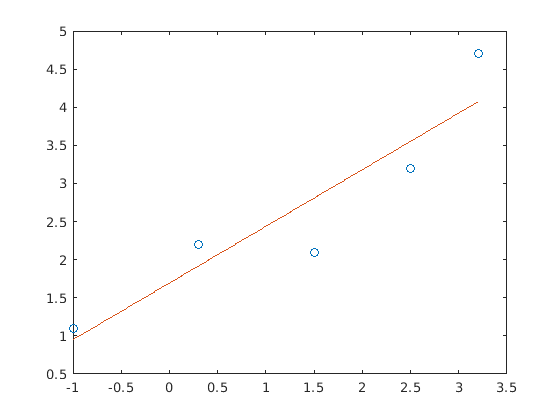

Mērijumu datu apstrade
Contents
Darba mērķi
- Iepazītirs ar merijumu apstrades pamatiem
- Iemacities pielietot apgutas zinašanas priekšmetos, kur ir nepieciešama merijumu datu apstrade(fizika, ETP)
- Iepazities veidot atskaites ar Matlab palidzibu
ievadisim eksperementalus datus:
Um = [-1 0.3 1.5 2.5 3.2] Im = [1.1 2.2 2.1 3.2 4.7] % pameģinesim uzzimet grafiku plot(Um,Im,'o-')% neder jo ir lauzta linija % meģenasim atrast matematisku sakarribu kas sasaista tos punktus %sakribu meklrsim polinomiala veida % saksim ar 2.kartas polinomu % y = C1*x^2+C2*x+C3 %funkcija kas atdot polinoma koeficentus saucas polyfit(polynomal %fitting)sintekse: % C = polyfit(x,y,N), N - polinoma karta % C polinoma koeficenti ko atdaris polyfit C = polyfit(Um,Im,1) % esam atraduši koeficentus lai uzzimetu panemsim x ar mazaku soli U = -1:0.01:3.2; % jareķina polinoms %I = C(1)*U.^3+C(2)*U.^2+C(3)*U+C(4) %to var automatizet ar funkciju polyval I = polyval(C,U); %uzzimesim plot(Um,Im,'o',U,I) %%Secinajumi: % ko es iemacijos šaja darba, secinajumi nedrikst sakrist arkoleģu % secinajumiem %3-4. teikumi %kad viss ir gatavs - veidosim pdf atskaiti janospiež publish-publish
Um =
-1.0000 0.3000 1.5000 2.5000 3.2000
Im =
1.1000 2.2000 2.1000 3.2000 4.7000
C =
0.7434 1.6936
